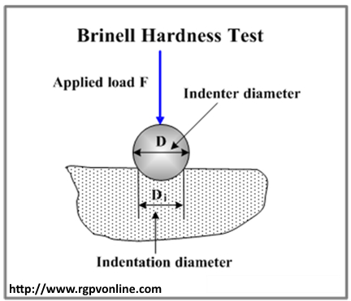

Q.17: What is Hardness? How do you measure it?
Answer:
Hardness is defined as the resistance of material to indentation, scratching, abrasion or cutting. Hardness testing plays a vital role in material testing, quality control and acceptance or rejection of components. Hardness testing of material before use is very important to access resistance to plastic deformation, to determining resistance to penetration, to indicate how easily a material can be machined. Hardness can be measure by various methods. Among them the most widely used is as follows:
BrinellHardness Testing
The Brinell test used a hardened steel ball (5 or 10 mm diameter) indenter. The indenter is applied to the test material below a load of 3000 kg. The load can be reduced to 1500 kg or 500 kg for testing soft materials to avoid excessive indentation. Force is applied for a specified time usually between 10 to 30 seconds. The load time period has to ensure the plastic deformation of the metal ceased.
Procedure:
• In this test, a steel ball indenter is pressed into the specimen for a specific period of time and with accurately controlled force.
• When ball indenter removed, the material has a round indent.
• Brinell test applies only a single test force.
• The surface area of the indentation is the measure of hardness HB of the material.
• The round impression is measured using a low-power microscope in millimeters.
• This round indent produced is measured to calculate material hardness according to the formula.
HB = Applied load (kg)/Surface area of the impression (mm2)
• It is generally referred to as Brinell hardness number.
